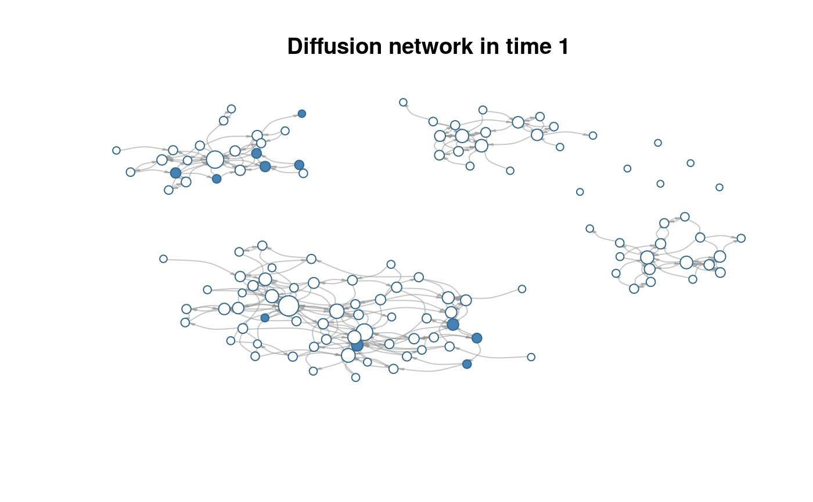

S3 plotting method for diffnet objects.
# S3 method for diffnet plot(x, y = NULL, t = 1, vertex.color = c(adopt = "steelblue", noadopt = "white"), vertex.size = "degree", main = "Diffusion network in time %d", minmax.relative.size = getOption("diffnet.minmax.relative.size", c(0.01, 0.04)), ...)
| x | An object of class |
|---|---|
| y | Ignored. |
| t | Integer scalar indicating the time slice to plot. |
| vertex.color | Character scalar/vector. Color of the vertices. |
| vertex.size | Either a numeric scalar or vector of size \(n\), or any of the following values: "indegree", "degree", or "outdegree" (see details). |
| main | Character. A title template to be passed to sprintf. |
| minmax.relative.size | Passed to |
| ... | Further arguments passed to |
A matrix with the coordinates of the vertices.
Plotting is done via the function plot.igraph.
When vertex.size is either of "degree", "indegree", or
"outdegree", vertex.size will be replace with dgr(.,cmode = )
so that the vertex size reflects the desired degree.
The argument minmax.relative.size is passed to rescale_vertex_igraph
which adjusts vertex.size so that the largest and smallest vertices
have a relative size of minmax.relative.size[2] and
minmax.relative.size[1] respectively with respect to the x-axis.
Other diffnet methods: %*%,
as.array.diffnet, c.diffnet,
diffnet-arithmetic,
diffnet-class, diffnet_index,
summary.diffnet
data(medInnovationsDiffNet) plot(medInnovationsDiffNet)